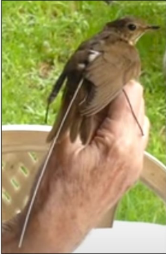

10-Dec-2023
Movimiento migratorio y motus

Zorzal de Swainson con nanoetiqueta MOTUS.1
Es raro ver aves en vuelo durante la migración. Normalmente vuelan alto para eludir a los depredadores. y por la noche para evitar el sobrecalentamiento. Pero podemos rastrearlos gracias a las torres Motus. Los investigadores pueden colocar pequeñas nanoetiquetas en las aves migratorias, que envían señales que son detectado por las torres Motus, como la del lado norte del Centro Natural Ankeny Hill. El seguimiento de los patrones de movimiento de las aves migratorias permite a los investigadores tomar decisiones informadas decisiones sobre especies vulnerables y sus diversos hábitats.
Un tipo de ave que se rastrea de esta manera es el Zorzal de Swainson (SWTH). Durante la migración de otoño de este año, la torre Ankeny Motus detectó nueve SWTH viajando hacia su Casa de invierno en Centroamérica. Siete de los nueve habían sido marcados por la Dra. Debbie Wheeler, biólogo/entomólogo de la Universidad de Fraser Valley en Columbia Británica. Utiliza la información recopilada de Motus para mejorar la comprensión de los patrones migratorios y comportamiento de SWTH y definir mejor su ruta migratoria a lo largo de la ruta migratoria del Pacífico.
El Dr. Wheeler dice: “Los datos de Motus están empezando a mostrar algunas rutas migratorias favorecidas - lamentablemente probablemente no tengamos suficientes etiquetas para sacar conclusiones sólidas, pero los resultados hasta ahora son interesantes”.
El éxito de la investigación de Wheeler depende del número de torres Motus en la trayectoria de vuelo SWTH. Y si bien el número ha aumentado significativamente en los últimos cinco años, ella dice: “Sólo necesitamos más datos de las estaciones Motus más al sur. tenemos varios aves que parecen haberse asentado en México, pero sospecho que se han ido más al sur, pero hay menos estaciones allí”.
Sabiendo que el éxito de la investigación depende de las torres de seguimiento, Vanessa Loverti, bióloga regional de aves playeras del Servicio de Pesca y Vida Silvestre de EE. UU., ha tomado la iniciativa en la colocación de torres Motus en Oregón y Washington, incluida la torre de Ankeny.
Ella dice: “El costo de construir una torre Motus es mucho más factible para nuestros socios y utiliza una red de investigación colaborativa para la conservación de las aves, que proporciona información valiosa como la duración de la estancia, el momento de la migración a el caldo de cultivo y datos sobre lugares de escala imprevistos”.
Está claro que el acceso a la tecnología de Motus y a los datos que genera facilita el trabajo de los investigadores. A medida que se construyen más torres y se marcan más aves, Motus desempeñará un papel cada vez más importante en el futuro. La torre Ankeny será parte de eso, y tendremos curiosidad por ver si alguno de ellos Los pájaros del Dr. Wheeler pasan por la torre Ankeny cuando regresan a sus terrenos de verano durante la migración de primavera.
Por Vickie Stiteler
Credits:
11Vancouver Avian Research Centre. (2022, July 7). Fitting a Motus tag [Video]. YouTube. https://www.youtube.com/watch?v=YrbWbYvU3go